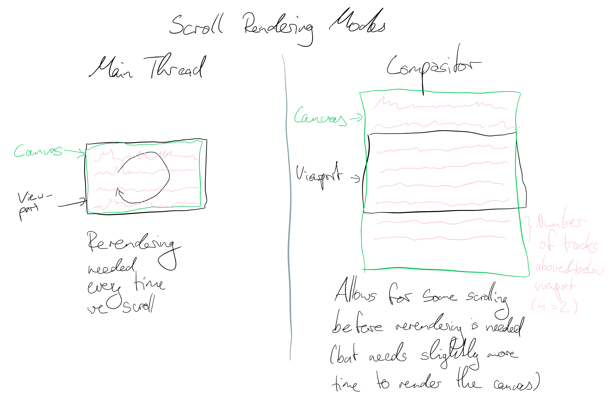

The main thread mode executes scrolling in the main thread and re-renders the canvas for every frame, whereas the compositor mode enables the natural browser scrolling and with a canvas that is larger than the view area.
In this mode, the screen does not actually move down when the user scrolls, and the scrolling behaviour is executed in the main thread. This is done separately for the DOM elements and the Canvas. For the DOM, it moves the elements up and down using positioning. The canvas is redrawn assuming a new position.
By pre-rendering an area of the canvas above and below the viewport, natural browser scrolling can happen on the composite thread, even when the main thread is blocked. When the main thread is available again, the canvas is refreshed to load the data around the current position.